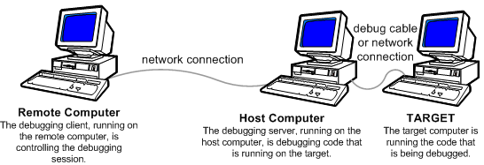

Remote debugging involves two debuggers running at two different locations. The debugger that performs the debugging is called the debugging server. The second debugger, called the debugging client, controls the debugging session from a remote location. To establish a remote session, you must set up the debugging server first and then activate the debugging client.
The code that is being debugged could be running on the same computer that is running the debugging server, or it could be running on a separate computer. If the debugging server is performing user-mode debugging, then the process that is being debugged can run on the same computer as the debugging server. If the debugging server is performing kernel-mode debugging, then the code being debugged would typically run on a separate target computer.
The following diagram illustrates a remote session where the debugging server, running on a host computer, is performing kernel-mode debugging of code that is running on a separate target computer.

There are several transport protocols you can use for a remote debugging connection: TCP, NPIPE, SPIPE, SSL, and COM Port. Suppose you have chosen to use TCP as the protocol and you have chosen to use WinDbg as both the debugging client and the debugging server. You can use the following procedure to establish a remote kernel-mode debugging session:
- On the host computer, open WinDbg and establish a kernel-mode debugging session with a target computer. (See Live Kernel-Mode Debugging Using WinDbg.)
- Break in by choosing Break from the Debug menu or by pressing CRTL-Break.
-
In the Debugger Command Window, enter the following command.
.server tcp:port=5005Note The port number 5005 is arbitrary. The port number is your choice. -
WinDbg will respond with output similar to the following.
Server started. Client can connect with any of these command lines 0: <debugger> -remote tcp:Port=5005,Server=YourHostComputer - On the remote computer, open WinDbg, and choose Connect to Remote Session from the File menu.
-
Under Connection String, enter the following string.
tcp:Port=5005,Server=YourHostComputerwhere YourHostComputer is the name of your host computer, which is running the debugging server.
Click OK.
Using the Command Line
As an alternative to the procedure given in the preceding section, you can set up a remote debugging session at the command line. Suppose you are set up to establish a kernel-mode debugging session, between a host computer and a target computer, over a 1394 cable on channel 32. You can use the following procedure to establish a remote debugging session:
-
On the host computer, enter the following command in a Command Prompt window.
windbg -server tcp:port=5005 -k 1394:channel=32 -
On the remote computer, enter the following command in a Command Prompt window.
windbg -remote tcp:Port=5005,Server=YourHostComputerwhere YourHostComputer is the name of your host computer, which is running the debugging server.
Additional Information
There are many ways to establish remote debugging other than the ones shown in this topic. For complete information about setting up a debugging server in the WinDbg Debugger Command Window, see .server (Create Debugging Server). For complete information about launching WinDbg (and establishing remote debugging) at the command line, see WinDbg Command-Line Options.